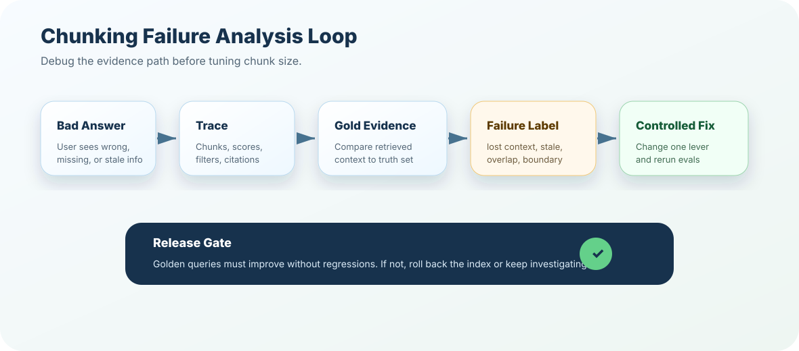

Chunking looks simple until production users ask real questions. This chapter teaches you how to diagnose chunking failures from traces, citations, retrieval results, and answer behavior instead of guessing your way through chunk-size changes.
How to read this chapter
Think like an incident reviewer: every bad answer has a symptom, evidence trail, root cause, and fix candidate.
Separate retrieval from generation: first prove whether the right chunk was retrieved before blaming the prompt or model.
Use failure labels: lost context, mixed-topic chunks, overlap noise, tiny chunks, giant chunks, bad boundaries, stale chunks, and missing metadata are different problems.
Prefer controlled fixes: change one chunking variable at a time and compare against golden queries.
A bad answer is not a single bug. It may be a bad chunk boundary, bad metadata, bad retrieval ranking, bad context assembly, or a prompt that ignored the evidence.
Core ideaChunking failure analysis is the discipline of using retrieval evidence, traces, citations, and golden questions to identify whether the chunk design helped or hurt the answer.
Sub-topic 1 of 13
Why Failure Analysis Matters
At a glance
Chunking failures often look like model failures.
Changing chunk size blindly can improve one query and break ten others.
Production RAG needs failure labels, trace evidence, and controlled experiments.
The best teams build a repeatable debugging loop before they tune aggressively.
Imagine a support assistant answers a refund question incorrectly. The quick reaction is: "The model hallucinated." But a senior engineer asks better questions. Was the refund policy retrieved? Was the right section retrieved? Did the retrieved chunk include the exception? Did overlap add conflicting text? Did metadata hide the latest version?
Failure-analysis north starDo not tune chunking until you can name the failure.
Chunk size is a lever, not a diagnosis. The diagnosis comes from traces and evals.
01
Capture the bad answer
Save user question, final answer, citations, retrieved chunks, scores, filters, prompt context, and index version.
02
Inspect the evidence
Check whether the answer had enough source material to be correct.
03
Label the failure
Lost context, wrong boundary, mixed topic, stale chunk, access filter, ranking, or prompt usage.
04
Test one fix
Change one variable, run golden queries, compare metrics, and keep rollback ready.
Sub-topic 2 of 13
Real-Life Analogy: A Doctor Diagnosing Symptoms
If a patient says "I am tired," a good doctor does not randomly prescribe medicine. They ask about sleep, food, stress, blood work, and history. The symptom is not enough. You need evidence.
RAG debugging is similar. "Answer is wrong" is only the symptom. The trace is your blood report. Retrieved chunks are your scan. Citations are your proof. Evaluation questions are your follow-up tests.
Mental model
Symptom: what the user sees.
Trace: what the system did.
Root cause: why evidence failed.
Fix: the smallest controlled change that improves the failure set.
Sub-topic 3 of 13
Failure Symptoms
Start with visible symptoms. They help you choose where to inspect first.
Lost context
The answer misses a condition
The retrieved chunk has the rule but not the exception, definition, or eligibility boundary around it.
Mixed topic
The chunk says too many things
A single chunk combines refund rules, cancellation steps, pricing limits, and legal notes, confusing retrieval and generation.
Overlap noise
Repeated text crowds the prompt
Many near-duplicate chunks are retrieved because overlap is too high or deduplication is weak.
Tiny chunks
Evidence is too fragmented
Chunks retrieve terms but not enough meaning. The model has puzzle pieces, not a usable answer.
Giant chunks
Retrieval is broad and lazy
Large chunks match many questions but bury the exact evidence inside too much unrelated text.
Stale chunks
Old policy wins
The retriever finds an outdated chunk because freshness metadata, versioning, or re-indexing controls are weak.
Sub-topic 4 of 13
Root Causes
Symptoms are what you observe. Root causes are what you fix. The same symptom can come from different causes, so the label matters.
Boundary root causes
Chunk starts after the definition, ends before the exception, cuts through a table, separates code from explanation, or merges unrelated headings.
Was the gold chunk retrieved? If not, inspect chunk boundaries, embedding quality, filters, and ranking.
Was it high enough? If it appears below top-k, tune retrieval before changing chunking.
Was enough surrounding context present? If not, add parent-child expansion or neighbor windows.
Was there conflicting context? If yes, inspect stale chunks, overlap duplicates, and version filters.
Did the model ignore good evidence? If yes, inspect prompt instructions and context formatting.
Sub-topic 6 of 13
Decision Framework
Use this flow before changing chunking settings.
Debug decision flow
From bad answer to fix candidate
1. Is the right source missing? Check ingestion, filters, metadata, index freshness, and access rules.
2. Is the right document found but wrong section retrieved? Check chunk boundaries, headings, query rewriting, and hybrid search.
3. Is the right chunk found but answer incomplete? Check neighbor chunks, parent expansion, context ordering, and prompt evidence use.
4. Are many similar chunks repeated? Check overlap, deduplication, top-k, and reranking.
5. Is old content beating new content? Check version metadata, effective dates, and index release process.
Sub-topic 7 of 13
Architecture View

Production debugging is a loop: capture the trace, label the failure, test a controlled fix, run evals, then release or roll back.
Failure analysis loop
bad answer
-> collect trace
-> inspect retrieved chunks
-> compare against gold evidence
-> label failure
-> propose one fix
-> run golden query set
-> release, rollback, or keep investigating
Sub-topic 8 of 13
Production Examples
E01
HR policy misses probation exception
Symptom: answer says all employees qualify.
Root cause: exception is in the next chunk and parent expansion is disabled.
Fix: add section-level parent retrieval and cite the exact exception child.
E02
Developer docs retrieve duplicate snippets
Symptom: prompt contains repeated setup commands.
Root cause: overlap is too high and no duplicate collapse runs after retrieval.
Fix: reduce overlap, add hash-based dedupe, and rerank diverse chunks.
E03
Runbook answer skips warning step
Symptom: assistant suggests restart before checking customer impact.
Root cause: fixed chunking split warning from the procedure.
Fix: chunk by numbered procedure blocks and keep warning banners attached.
E04
Legal FAQ cites outdated clause
Symptom: answer cites a retired policy.
Root cause: stale chunks remain in the active index.
Fix: enforce effective-date filters and index release cleanup.
E05
Product manual retrieves the whole chapter
Symptom: answer is vague and citation is too broad.
Root cause: giant chunks hide exact steps inside long sections.
Fix: split by task heading and use parent section only as context.
Sub-topic 9 of 13
Metrics and Evals
For chunking, final answer accuracy is important but not enough. You need intermediate metrics that tell you where the system broke.
Retrieve precise child chunks, then add bounded parent or adjacent chunks only when needed.
Mixed topics
Split by semantic or heading boundaries
Make each chunk represent one coherent idea, rule, task, or decision point.
Overlap noise
Reduce overlap and dedupe
Use overlap intentionally, then collapse near-duplicates before prompt assembly.
Tiny chunks
Merge into complete thought units
Attach definitions, examples, tables, warnings, and code blocks to their explanation.
Giant chunks
Split and cite smaller evidence
Keep parent context available, but cite the smallest verifiable evidence unit.
Stale chunks
Version and release indexes
Filter by active status and effective date, then validate index cleanup during release.
Sub-topic 11 of 13
Common Mistakes
M01
Changing chunk size without a failure label
Symptom: random tuning creates random improvement.
Better move: label the failure first, then choose the smallest fix.
M02
Blaming the model before checking retrieved chunks
Symptom: teams rewrite prompts while the right evidence was never retrieved.
Better move: inspect top-k results and gold chunk rank first.
M03
Using only one demo question
Symptom: fix helps the demo and hurts real users.
Better move: run a golden set across policy, FAQ, table, code, and edge-case questions.
M04
Ignoring stale chunks
Symptom: retrieval looks confident but answers with old policy.
Better move: track source version, active status, effective date, and index version.
M05
Making chunks huge to avoid lost context
Symptom: answer becomes vague because context is too broad.
Better move: retrieve small evidence and expand context intentionally.
M06
Making chunks tiny to improve precision
Symptom: retrieval finds keywords without enough meaning.
Better move: chunk complete thought units, not isolated fragments.
M07
Forgetting tables, code, and warnings
Symptom: critical rows or warning banners separate from explanation.
Better move: use structure-aware parsing and chunking rules for special content.
M08
No rollback plan for re-chunking
Symptom: a new index ships and failures cannot be reversed quickly.
Better move: version chunker, index, eval report, and release gate together.
M09
Evaluating only answer text
Symptom: you know the answer is wrong but not whether retrieval, chunking, or prompt assembly failed.
Better move: score retrieval, chunk quality, context assembly, and final answer separately.
M10
Not saving traces for user complaints
Symptom: production issues become stories instead of evidence.
Better move: store trace ids, chunks, scores, prompt context, citations, and index versions.
Sub-topic 12 of 13
Mini Assignment
Take five bad RAG answers from any domain: HR policy, product docs, support KB, runbooks, or legal FAQ. For each one, fill a failure review: symptom, retrieved chunks, gold evidence, failure label, root cause, fix candidate, metric to improve, and rollback risk.
Sub-topic 13 of 13
Points To Remember
Chunking failure analysis turns bad answers into inspectable engineering evidence.
Do not tune chunk size blindly. Label the failure first.
Inspect retrieval traces before blaming the model or prompt.
Lost context, mixed topics, overlap noise, stale chunks, tiny chunks, and giant chunks need different fixes.
Production teams version chunkers, indexes, evals, and release decisions together.
Next, test your debugging judgment in the quiz, then build a small failure-review engine in exercises and project.